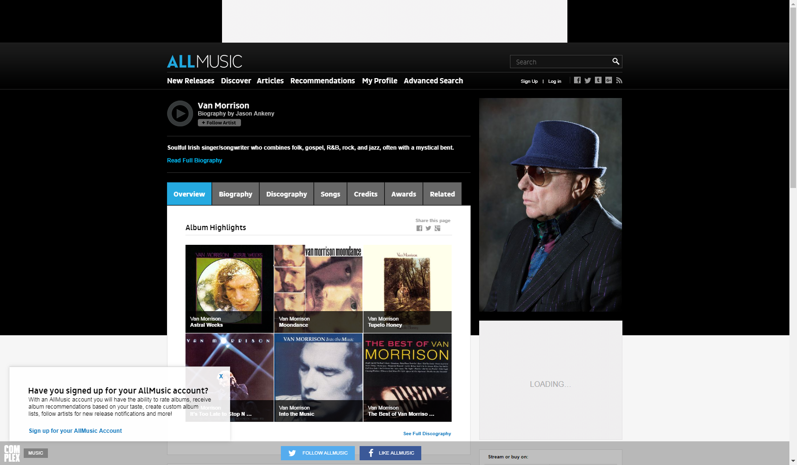
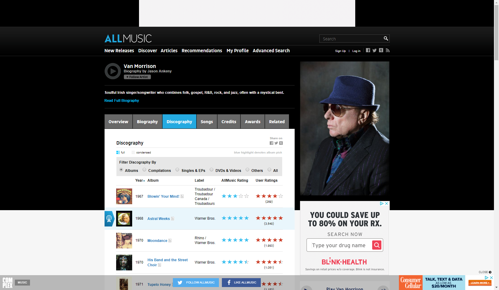
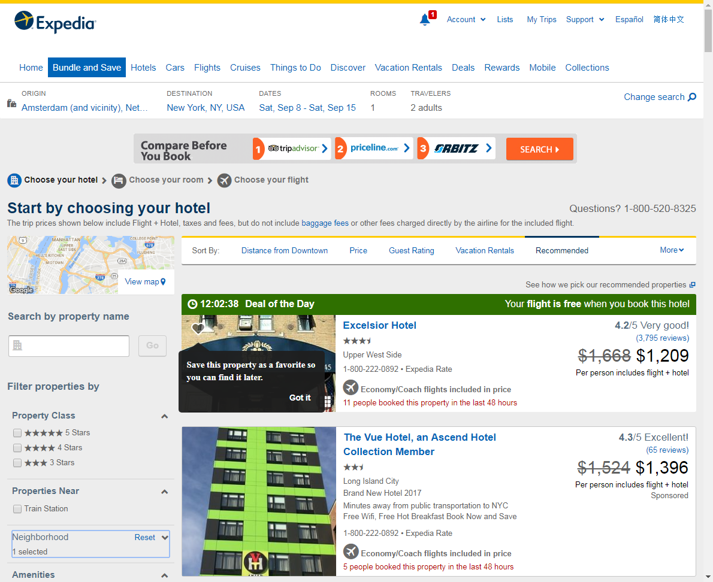
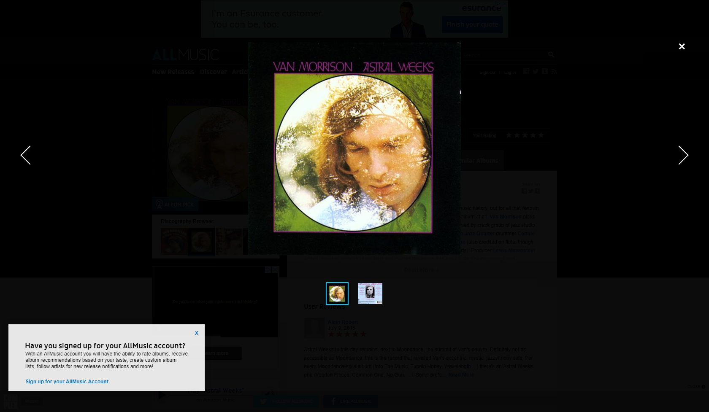

Website testing using BrowserTest
On this page we test retrieving some information from AllMusic.
To do this we use a Slim script table[?] driving the Java class BrowserTest (which uses Selenium).
This class allows us to specify what we want to do using a web browser, by the (end user visible) texts on screen. We don't need to specify any HTML code or write any custom Java logic. By only using the texts visible on screen we only need to change the script if the site's interaction design changes, but not for changes in HTML structure, element naming or styling.
The configuration of Selenium (i.e. which browser to use) and starting the browser session is done in the SuiteSetup[?]. Which allows this configuration to be shared between tests. Closing the browser is done in SuiteTearDown, which happens after all tests are completed.
| script | browser test | |||||||
| seconds before timeout | 60 | |||||||
| open | https://www.allmusic.com | |||||||
| show | click if available | I accept | false | |||||
| enter | Van Morrison | as | Search | |||||
| press | enter | |||||||
| click | Van Morrison | |||||||
| show | take screenshot | overview |  | |||||
| click | Discography | |||||||
| check | page title | Van Morrison | Album Discography | AllMusic | ||||||
| show | take screenshot | discography |  | |||||
| check | value of | Year | in row where | Album | is | Astral Weeks | 1968 | |
| click Timed-out waiting (after 60s). Page content: |
Astral Weeks | |||||||
| show | take screenshot | album | ||||||
| click Timed-out waiting (after 60s). |
click to embiggen | |||||||
| wait for cover to appear | ||||||||
| wait | 1 | seconds | ||||||
| show | take screenshot | cover |  | |||||

When multiple similar sequences of steps are needed a script can be generalized using a scenario, which is show in ScenarioTest.
To make test more readable, maintainable and powerful we can also create custom subclasses of BrowserTest. This is shown in CustomFixtureTest.